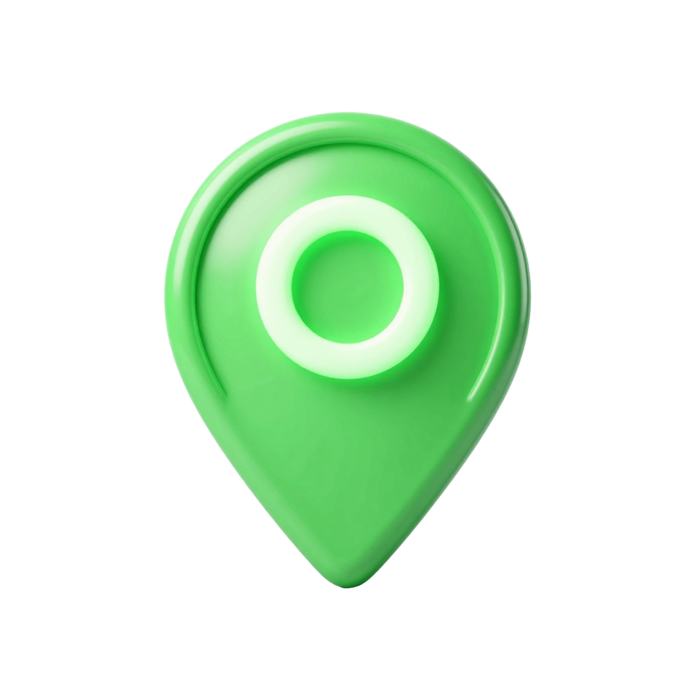

Transforme lixo em recurso e reduza impactos ambientais com descarte correto.
Pontos de coleta recebem eletrônicos usados.
Separação de peças e materiais recicláveis.
Materiais são triturados e separados.
Metais como ouro e cobre são reaproveitados.
